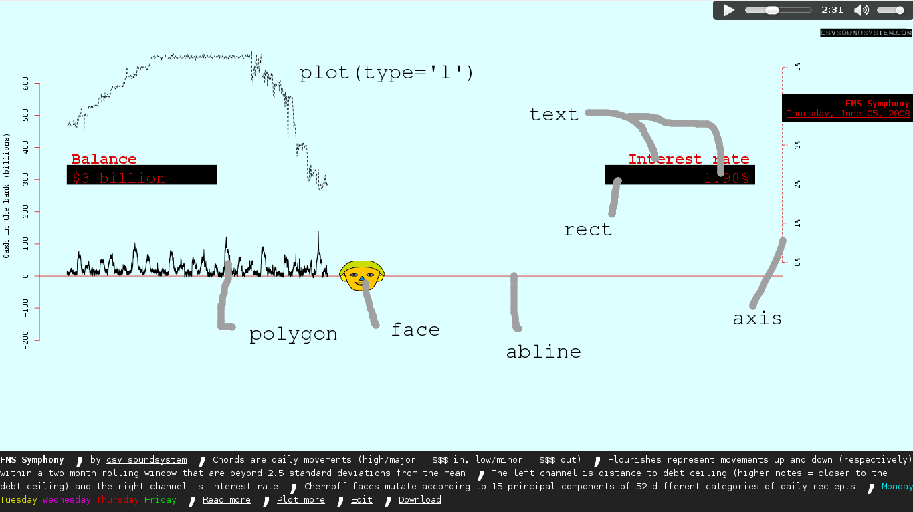

Music Videos in R
Presenting high-dimensional data in a web browser
Big Data
Static images are limited

Wide audience
Vision
Hearing
Touch
navigator.vibrate([1000, 500, 2000])Side benefits
Accessibility
Reaching young people
Why use R?

Vector graphics
A plot goes here.
CSV Soundsystem
Sound waves go here.
Data
str(iris)
'data.frame': 150 obs. of 5 variables:
$ Sepal.Length: num 5.1 4.9 4.7 4.6 5 5.4 4.6 5 4.4 4.9 ...
$ Sepal.Width : num 3.5 3 3.2 3.1 3.6 3.9 3.4 3.4 2.9 3.1 ...
$ Petal.Length: num 1.4 1.4 1.3 1.5 1.4 1.7 1.4 1.5 1.4 1.5 ...
$ Petal.Width : num 0.2 0.2 0.2 0.2 0.2 0.4 0.3 0.2 0.2 0.1 ...
$ Species : Factor w/ 3 levels "setosa","versicolor",..: 1 1 1 1 1 1 1 1 1 1 ...Two case studies
Christmas Gifts
Walk through the code
Federal spending

Fed spending
- Download fixies from the FMS site, and convert them into CSV
- Load into R, and produce the audio and video tracks
- Generate 1877 plots, one per frame.
- Generate a song.
- Combine the frames and the song in a website
Video
The part that we generate in R

Overview: The main function
main.plots <- function() {
for (i in 1:nrow(table2.toplot)) {
png(sprintf('slideshow/%d.png', i), width = 1200, height = 600)
frame(i)
dev.off()
}
}
Now we'll walk through the code, glossing over the sections that are less specific to music videos.
Libraries
Libraries
library(plyr)
library(aplpack) # Cheroff faces
library(reshape2)
Video
Munge
# Load the data
if (!'table2.raw' %in% ls()) {
table2.raw <- read.csv('table2-std.csv')
# Fix types
table2.raw$date <- as.Date(table2.raw$date)
table2.raw$type <- factor(table2.raw$type)
table2.raw$item <- factor(table2.raw$item)
table2.raw$today <- as.numeric(table2.raw$today)
source('data.r')
fed.rate <- read.csv('fed_rate.csv', stringsAsFactors = F)
fed.rate$date <- strptime(fed.rate$date, format = '%m/%d/%y')
}
table2 <- table2.raw[!table2.raw$is_total,c('date', 'type', 'item', 'today')]
# Select only the items that are present on all days.
n.days <- length(unique(table2$date))
table2.pca <- ddply(table2, c('type', 'item'), function(df) {
if (nrow(df) == n.days) {
df
}
})
Video
# Run PCA
items <- dcast(table2.pca, date ~ type + item, value.var = 'today')[-1]
pca <- princomp(items, cor = T)
pca.stuff <- function() {
summary(pca)
plot(pca$sdev ~ I(1:length(pca$sdev)))
}
factored <- t(scale(items, center = pca$center, scale = pca$scale) %*% pca$loadings)
Video
Generate all 1877 faces. This takes some time.
# Make faces
f.all <- faces(t(factored)[,1:15], plot = F, print.info = F)
Problem with aplpack
Plotting this could take a while.

Plot optimization hack
# Plot a Chernoff face for a day at an x, y
face <- function(day.or.days, x, y, ...) {
# day.or.days is a row index
f <- f.all
f$xy <- f$faces <- NULL
f$xy <- matrix(f.all$xy[,day.or.days])
dimnames(f$xy) <- dimnames(f.all$xy)
f$faces <-f.all$faces[day.or.days]
x.pos <- x + abs(diff(range(table2.toplot$date)) / 20)
plot.faces(f, face.type = 1, x.pos = x.pos, y.pos = y, ...)
}
Dunno what this does
# Other plot stuff
table2.tmp <- ddply(table2.pca, 'date', function(df) { c(error = sd(df$today)) })
table2.toplot <- join(join(table2.tmp, fms.day[c('date', 'balance')]), fed.rate)
More munging
# Remove NAs
table2.toplot[c(358, 833, 1022, 1393, 1398),] <- table2.toplot[c(358, 833, 1022, 1393, 1398) - 1,]
# Skip the top 40 for rolling.
table2.toplot <- table2.toplot[-(1:40),]
Colors
# Video frame
bg.of.week <- c(
Sunday = '#DDDDDD',
Monday = '#FFDDDD',
Tuesday = '#DDFFDD',
Wednesday = '#DDDDFF',
Thursday = '#DDFFFF',
Friday = '#FFFFDD',
Saturday = '#FFDDFF'
)
fg.of.week <- c(
Sunday = '#000000',
Monday = '#00DDDD',
Tuesday = '#DDDD00',
Wednesday = '#DD00DD',
Thursday = '#DD0000',
Friday = '#00DD00',
Saturday = '#0000DD'
)
Plot one frame
frame <- function(i) {
if (i <= 2) {
return
}
day.of.week.a <- strftime(table2.toplot[i,'date'], format = '%A')
bg <- bg.of.week[day.of.week.a][[1]]
fg <- fg.of.week[day.of.week.a][[1]]
par(
bg = bg
)
plot(
table2.toplot[1:i,'balance'] ~ table2.toplot[1:i,'date'],
type = 'n',
xlim = range(table2.toplot$date),
ylim = c(-2e5, 7e5), #range(table2.toplot$balance),
xlab = '', #Date
ylab = 'Cash in the bank (billions)', main = '', #'FMS Soundsystem',
axes = F, col = 4 # so we notice errors
)
abline(h = 0, col = fg)
# Rate
#range(table2.toplot$balance)
# Balance
polygon(
c(table2.toplot[1:i,'date'], table2.toplot[i:1,'date']),
c(table2.toplot[1:i,'balance'], table2.toplot[i:1,'balance']) + c(table2.toplot[1:i,'error'], - table2.toplot[i:1,'error']),
col = 1
)
# Under balance
rect(
xright = min(table2.toplot$date),
ybottom = mean(range(table2.toplot$balance)) * 0.95,
xleft = weighted.mean(range(table2.toplot$date), c(18, 3)),
ytop = mean(range(table2.toplot$balance)) * 1.15,
col = 1
)
text(
x = min(table2.toplot$date),
y = mean(range(table2.toplot$balance)) * c(1.1, 1),
labels = c(
'Balance',
sub('\\$-', '-$', paste('$', as.character(round(table2.toplot[i,'balance'] / 1000)), ' billion', sep = ''))
),
pos = 4, font = 2:1, col = fg
)
# Under interest rate
rect(
xleft = weighted.mean(range(table2.toplot$date), c(3, 18)),
ybottom = mean(range(table2.toplot$balance)) * 0.95,
xright = max(table2.toplot$date),
ytop = mean(range(table2.toplot$balance)) * 1.15,
col = 1
)
text(
x = max(table2.toplot$date),
y = mean(range(table2.toplot$balance)) * c(1.1, 1),
labels = c(
'Interest rate',
sub('\\$-', '-$', paste('$', as.character(round(table2.toplot[i,'balance'] / 1000)), ' billion', sep = ''))
),
pos = 2, font = 2:1, col = fg
)
# Under main
rect(
xleft = weighted.mean(range(table2.toplot$date), c(2, 9)),
ybottom = weighted.mean(range(table2.toplot$balance), c(2, 15)),
xright = max(table2.toplot$date),
ytop = max(table2.toplot$balance),
col = 1
)
text(
x = weighted.mean(range(table2.toplot$date), c(1, 9)),
y = c(
weighted.mean(range(table2.toplot$balance), c(1, 15)),
weighted.mean(range(table2.toplot$balance), c(2, 15))
),
labels = c(
'FMS Soundsystem',
strftime(table2.toplot[i,'date'], format = '%B %Y')
),
col = fg, pos = 3, font = 2:1
)
ticks <- seq(-2e5, 6e5, 1e5)
axis(2, at = ticks, labels = round(ticks / 1000))
face(i,
x = table2.toplot[i,'date'],
y = table2.toplot[i,'balance'],
height = abs(diff(range(table2.toplot$balance))) / 5,
width = abs(diff(range(table2.toplot$date))) / 10,
labels = ''
)
par(new = T)
plot(
table2.toplot[1:i,'rate'] ~ table2.toplot[1:i,'date'],
axes = F, xlab = '', ylab = '', type = 'l', lty = 2,
xlim = range(table2.toplot$date), ylim = c(-2, max(table2.toplot$rate))
)
mtext("Federal interest rate", side=4, line=3)
axis(4, at = 0:5, labels = paste(0:5, '%', sep = ''), lty = 2)
}
Plot one frame: How to use
# Plot the 30th frame.
frame(30)
type="n"
plot(
table2.toplot[1:i,'balance'] ~ table2.toplot[1:i,'date'],
type = 'n',
xlim = range(table2.toplot$date),
ylim = c(-2e5, 7e5), #range(table2.toplot$balance),
xlab = '', #Date
ylab = 'Cash in the bank (billions)', main = '', #'FMS Soundsystem',
axes = F, col = 4 # so we notice errors
)
Confidence interval with polygon
# Balance
polygon(
c(table2.toplot[1:i,'date'], table2.toplot[i:1,'date']),
c(table2.toplot[1:i,'balance'], table2.toplot[i:1,'balance']) + c(table2.toplot[1:i,'error'], - table2.toplot[i:1,'error']),
col = 1
)
More arguments to plot
par(new = T)
plot(
table2.toplot[1:i,'rate'] ~ table2.toplot[1:i,'date'],
axes = F, xlab = '', ylab = '', type = 'l', lty = 2,
xlim = range(table2.toplot$date), ylim = c(-2, max(table2.toplot$rate))
)
mtext("Federal interest rate", side=4, line=3)
axis(4, at = 0:5, labels = paste(0:5, '%', sep = ''), lty = 2)
Plot one frame: interesting bits
Plot one frame: interesting bits
Things to remember
- Base R graphics are powerful.
locatoris helpful.- Use ggplot if you don't need this level of control.
CSV Soundsystem library
Global State
Set data-state="something" on a slide and "something"
will be added as a class to the document element when the slide is open. This lets you
apply broader style changes, like switching the background.
"blackout"
"soothe"
Export to PDF
Presentations can be exported to PDF, below is an example that's been uploaded to SlideShare.